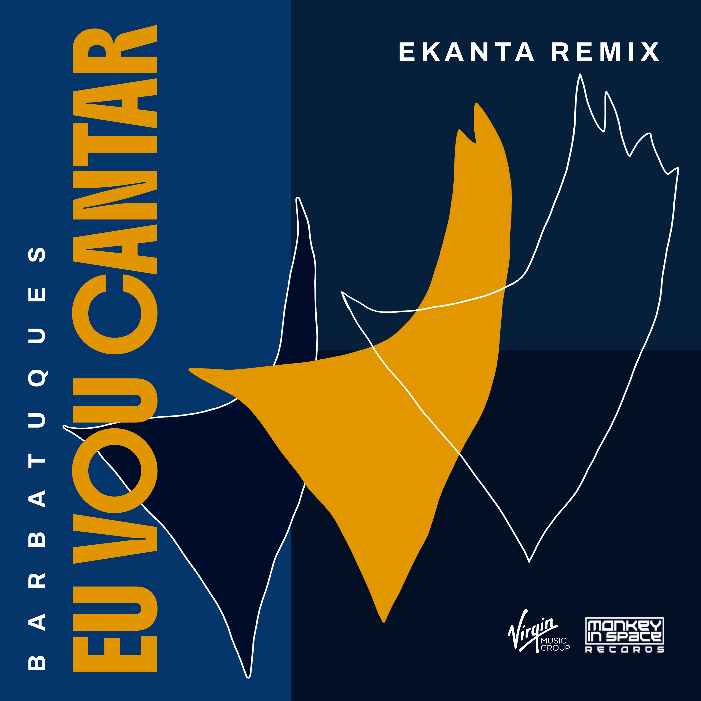
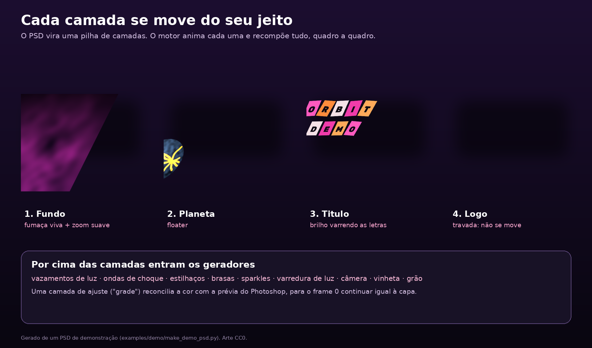
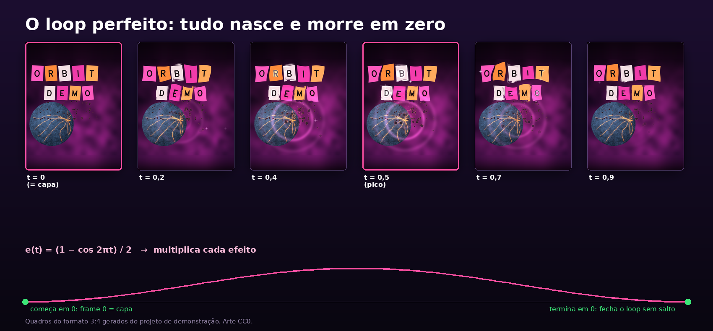

Resultados reais
Exemplos
Capas reais de lançamentos animadas com o projeto. Cada uma gera 2 vídeos: 1:1 (3840×3840) e 3:4 (2048×2732).
EKANTA — EU VOU CANTAR



Você Chegou


Transforme a capa do seu lançamento em Apple Music Album Motion Art — com camadas, keyframes, efeitos e validação automática. Sem After Effects. Sem motion designer.
A Apple Music permite que artistas e selos substituam a capa estática do álbum por um vídeo curto em loop que aparece na página do álbum, na busca e nas playlists.
É uma forma de dar vida à arte do lançamento e destacar o trabalho na plataforma. O toolkit oficial da Apple traz templates de After Effects, mas não cria a animação — é preciso um motion designer ou uma ferramenta como esta.
Este projeto automatiza todo o processo: da capa ao vídeo validado, com camadas, keyframes, efeitos e checagem das regras da Apple.
De uma capa a dois vídeos validados, em 5 passos.
1. Prepare o material — Capa plana (PNG/JPG/TIFF) ou PSD em camadas. Qualquer tamanho: 2048, 3000 ou 4K. Se não for quadrada, use --fit crop ou --fit extend.
2. Inicialize o projeto — studio.py init capa.png work/proj --template punk-impact cria o projeto com camadas, efeitos e movimento inicial.
3. Edite e faça preview — Adicione camadas, efeitos, keyframes. Veja o preview (folha de contato, GIF) e itere.
4. Cheque e renderize — studio.py check valida frame 0, loop, flash e brilho. studio.py render gera os .mov (3:4 e 1:1).
5. Valide e entregue — validate_motion.py confirma resolução, SAR, bitrate, duração e codec. Tudo ✅ = pronto para a distribuidora.

Camadas: imagem, texto, gerador, trava, ajuste
Loop perfeito por construção — todo efeito nasce e morre em zeroCapas reais de lançamentos animadas com o projeto. Cada uma gera 2 vídeos: 1:1 (3840×3840) e 3:4 (2048×2732).

PNG/JPG/TIFF quadrados (2048, 3000, 4K) e PSD em camadas. Recorte automático de pessoa com IA.
Camadas image/text/generator/lock/adjust, keyframes e expressões em loop fechado, blend modes.
8 efeitos de camada + 11 geradores. Crie efeitos novos em Python com new-effect.
Reprova frame 0 ≠ capa, salto no loop, flash/strobe, brilho estourado.
Resolução, SAR 1:1, 45–100 Mbps, duração, mudo, Rec.709, frame rate, flash, loop.
Detecta e remove Parental Advisory (Apple não permite na arte de motion).
Arte de ponta a ponta; só topo/base são estendidos. Itens-chave na Safe Area.
Diagnóstico de ambiente, autoteste e estimativa de tempo de render.
Diretor criativo para Claude / Copilot: pergunta, monta, mostra preview, itera, valida.
1. Prepare o material — Capa plana (PNG/JPG/TIFF) ou PSD em camadas. Qualquer tamanho: 2048, 3000 ou 4K.
2. Inicialize — Cria o projeto com camadas, efeitos e movimento inicial. Confira com studio.py info.
3. Edite e faça preview — Adicione camadas, efeitos, keyframes. Veja a folha de contato ou GIF e itere.
4. Cheque e renderize — check valida frame 0, loop, flash e brilho. render gera os .mov (3:4 e 1:1).
5. Valide e entregue — validate_motion.py confirma resolução, SAR, bitrate, duração e codec. Tudo ✅ = pronto.
Requisitos, one-click, manual, Docker, Windows/macOS.
Primeiros passos em 5 minutos.
Regras oficiais, bitrate, SAR, duração, flash.
Problemas comuns e soluções.
Claude / Copilot como diretor de motion.
Perguntas frequentes.
Editor de motion: camadas, keyframes, efeitos.
scene.json: estrutura e validação.
8 efeitos de camada + 11 geradores.
Importação de PSD em camadas.
Plugins em Python.
Perguntas e ideias para animação.
Tempo de render e otimização.
Windows, macOS, Docker.
Segurança e testes automatizados.